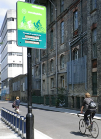

Cycle Hackney is a smartphone app for recording your cycle trips. When you use the app, you are giving transport planners with Hackney Council the data they need to make the borough a better place to cycle.
The app uses your phone's GPS record your routes in real-time, allowing the Council to know which routes cyclists prefer or avoid.
The app will also allow users to report problems along their route such as potholes, obstructed bike lanes, inadequate cycle parking etc.
The information collected by the app will be used by the Council to consider and make strategic improvements to the borough's cycle infrastructure. This will make cycling in Hackney more pleasant, and encourage those who currently don't cycle to give it a go.

Mapping data courtesy of OpenStreetMap.
App developed by CycleStreets.